Le portail donne accès aux diffèrents projets visible par l'utilisateur. Il contient plusieurs « portlets » que l'on peut déplacer sur la page. Il est possible de choisir quels « portlets » sont affichés en les cochant ou en les décochant sur la partie Components à gauche. On peut consulter la liste des projets dans le « portlets » Projects ainsi que différents flux RSS définis au niveau du portail dans le portlet Portal feeds. On accède à un projet en cliquant dessus.
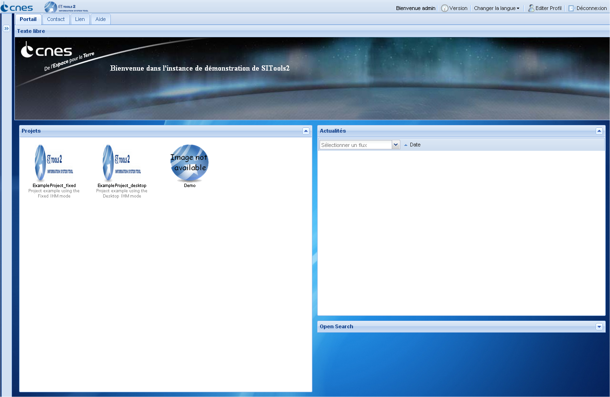
Le bureau représente l'espace de travail de l'utilisateur. Depuis cette interface, l'utilisateur accède aux différents modules présents dans la barre de navigation de SITools 2.
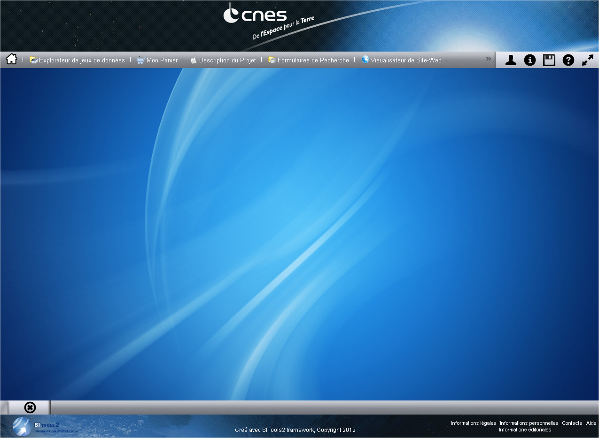
SITools 2 permet de sauvegarder son bureau (position/tailler des fenêtres, mode du bureau : étendu/normal) afin qu’elles s’ouvrent automatiquement lors d’une prochaine connexion. Pour cela il suffit de s’enregistrer, de posséder un espace utilisateur et de cliquer sur l'icone Sauvegarder de la barre de navigation. La sauvegarde des fenêtres est aussi disponible depuis l'icone Sauvegarder des fenêtres de jeux de données.
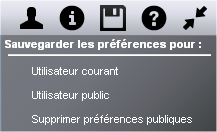

Depuis cette fenêtre, l'utilisateur peut changer la langue, modifier ses informations, consulter son espace de stockage, le status des tâches qu'il a lancé ou encore les commandes qu'il a passé.
L'espace personnel est une zone de stockage privé dédiée à l'utilisateur. A cet endroit seront sauvegardés ses préférences du projet, ses sélections et ses commandes. Il sera également possible de consulter et supprimer ces fichiers.
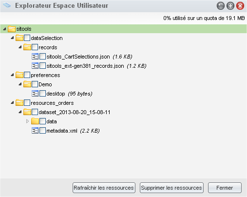
L'interface des tâches permet de consulter le status les actions (services) qui ont été exécutées par l'utilisateur. Une action peut être par exemple un téléchargement, une commande...

Cette interface répertorie toutes les commandes qui ont été passées par l'utilisateur. Exemple : Une commande est la sélection et le téléchargement d'enregistrement choisis par l'utilisateur.
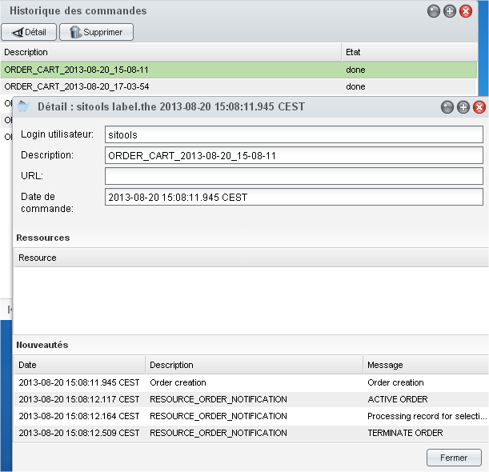
Ce module donne accès à l'ensemble des jeux de données du projet (visible pour l'utilisateur) et aux différents services de jeux de données (Recherche formulaire, RSS, OpenSearch...)

Depuis le module Projet RSS, il est possible de visualiser toutes les actualités d'un flux. Le détail de chaque actualité est disponible en double cliquant sur l'article. Sous Mozilla Firefox, il est également possible de s'abonner à ces flux en cliquant sur l'icône RSS à droite de la barre d'adresse.

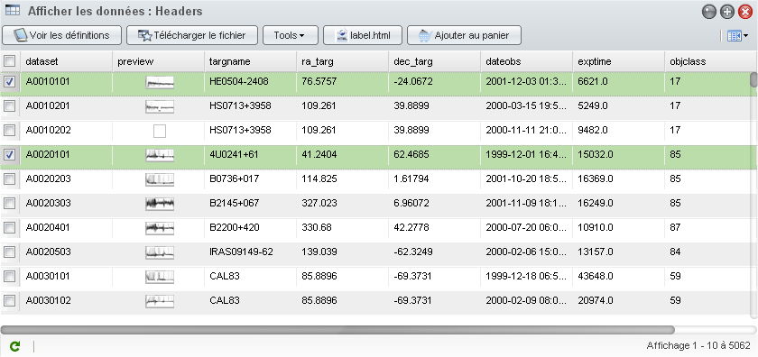
Cette fenêtre est accessible via Afficher les données de l'explorateur de jeux de données. Elle affiche l'ensemble des données contenues dans le jeu de données. On peut appliquer des services sur une sélection de données.
Il est possible de sauvegarder les paramètres de cette fenêtre en cliquant sur Enr. configuration. Dans ce cas, sont sauvegardés la position et la taille de la fenétre, la position et la taille des colonnes ainsi que leurs visibilitées.
Cette fenêtre représente la vue détaillé d'un enregistrement. Elle donne accès à tout les attributs, liens et images d'un enregistrement. Pour accéder à cette vue, il suffit de cliquer sur le service Détails dans la barre d'outils.
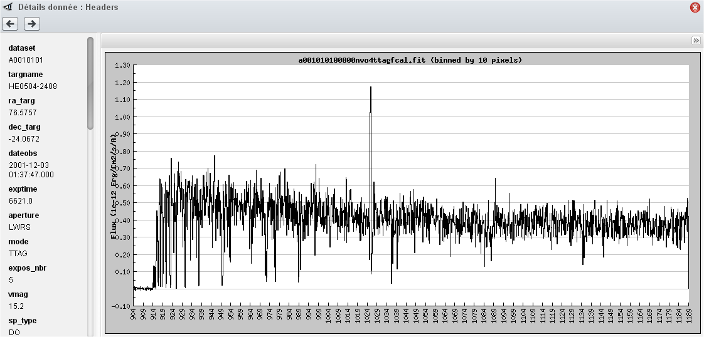
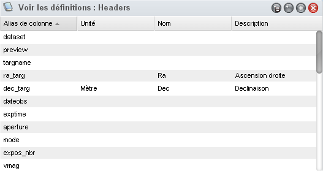
Cette fenêtre est accessible via le menu Voir les définitions de l'explorateur de jeux de données.
Il est possible de sauvegarder les paramètres de cette fenêtre en cliquant sur Enr. configuration. Dans ce cas, sont sauvegardés la position et la taille de la fenêtre.
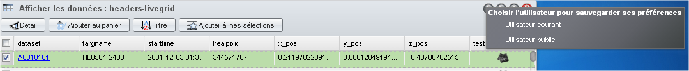


Cette fenêtre est accessible via la liste des formulaires sous le dossier Actualités de l'explorateur de jeux de données.
Cette fenêtre est accessible via le menu OpenSearch de l'explorateur de jeux de données.
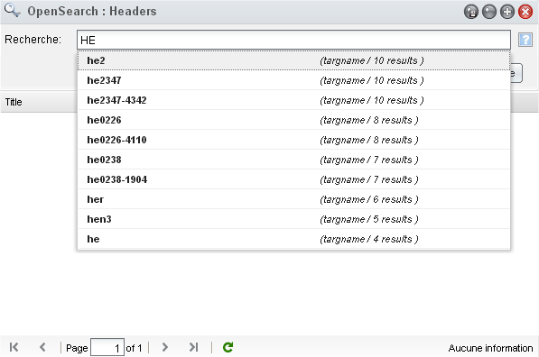
http://lucene.apache.org/java/2_3_2/queryparsersyntax.html
http://www.opensearch.org/Specifications/OpenSearch/1.1#Template_grammar
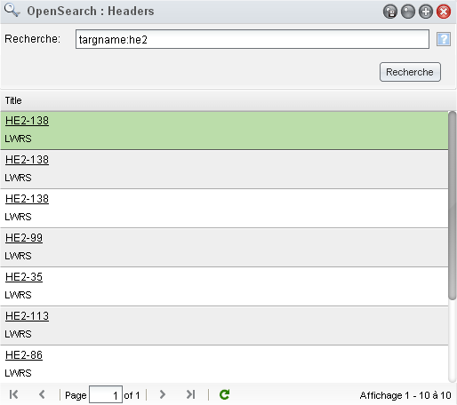
Double cliquer sur la ligne de la donnée. (cf 1.3.2)
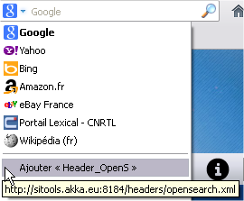